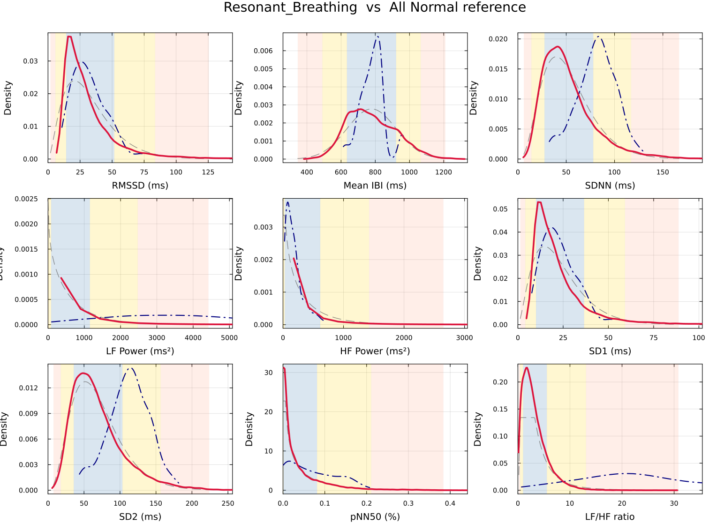

A JuliaCon 2026 talk template
JuliaCon Global 2026 — Mainz, Germany
2026-08-10
This deck is a reference sheet, not a talk. Each slide demonstrates one pattern from juliacon2026.scss. Copy the pattern you need into docs/slides/HeartRateLab.qmd — see README.md in this folder for the merge steps.
The section slides use a JuliaCon 2026 violet gradient (palette sampled from the official Mainz banner), painted edge-to-edge by reveal’s native background layer — no white frame.
Standard Quarto/reveal .columns — no extra CSS needed, it inherits the theme.
The four callout colors are remapped to the brand so you don’t need any new syntax — just the usual ::: {.callout-*} fenced divs.
Why context matters
.callout-note → Julia blue. Good for framing / method notes.
Typical range
.callout-tip → Julia green. Good for “within normal range” results.
Notably atypical
.callout-important → Julia red. Good for flagging elevated z-scores.

docs/reports/).Figure captions render small and muted automatically (.caption rule).
Use the .jc-stat span classes inline to call out a number the way the poster’s z-score table does:
Static highlighting only — no Julia kernel required to render this template. Once merged into a Julia-executed deck (like HeartRateLab.qmd, which sets jupyter: julia-1.11), switch back to ```{julia} for live output.
A blockquote looks like this — green left rule, purple italic text.
| Feature | Family | z-equiv |
|---|---|---|
| LF/HF | LogNormal | +2.64 |
| SDNN | Gamma | +1.12 |
| RMSSD | Gamma | +0.03 |
A # heading is both a full-bleed section divider and the top of a vertical stack. Every ## after it becomes a down-slide — press ↓ (or Space) to descend. Try it now: there are three down-slides below this one.
How Quarto builds vertical stacks
# = new horizontal slide (stack top) · ## after it = nested down-slides. This nesting is automatic — no special class needed. Control the arrow-key behaviour with navigation-mode: linear (right/space only, verticals flattened) or leave the default (↓/↑ walk a stack, →/← jump between stacks).
This is the first vertical child of the section above.
c/t (current / total) in the corner — vertical position is tracked too.Down-slides are ordinary content slides — they inherit the white theme, the green heading pip, callouts, code blocks, everything.
Good use for a stack
Park optional detail / backup material as down-slides under a headline slide: the audience sees the headline, and you drill down only if asked.
Last one in the stack. Pressing → (or Space) from here jumps back up to the horizontal track and on to the closing slide.
juliacon Global · 2026
Alberto Barradas (abcsds) · Mainz, Germany · August 10–15, 2026
github.com/abcsds/HeartRateLab.jl
abcsds/HeartRateLab.jl